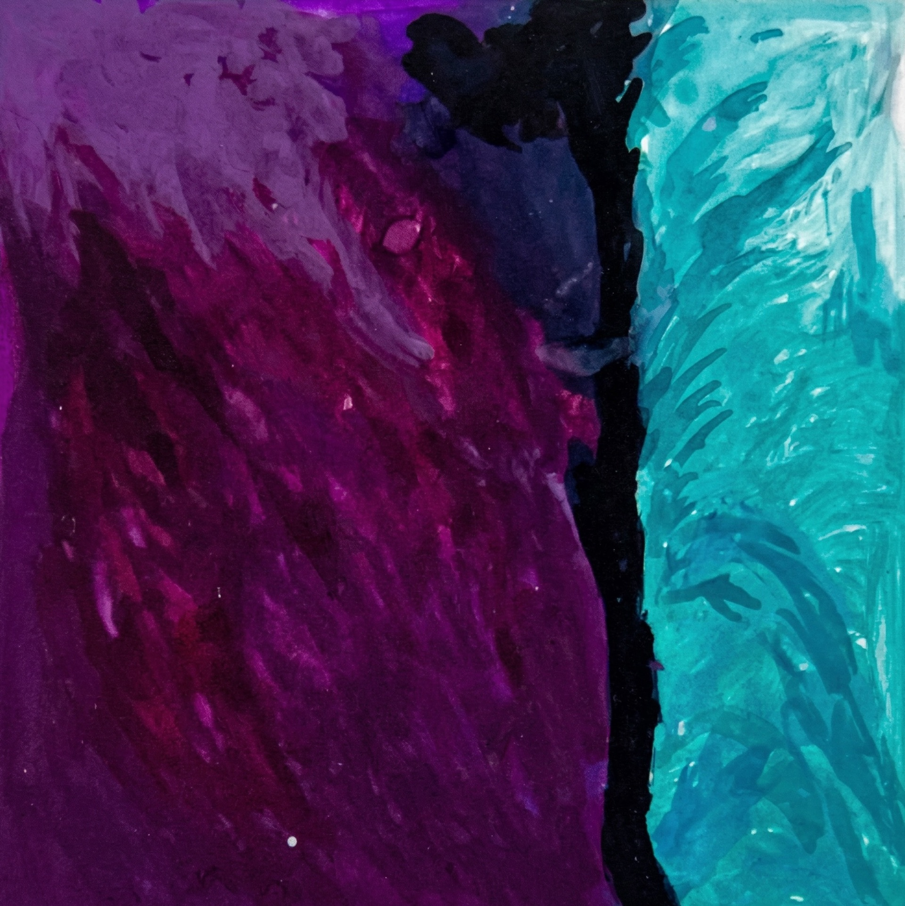
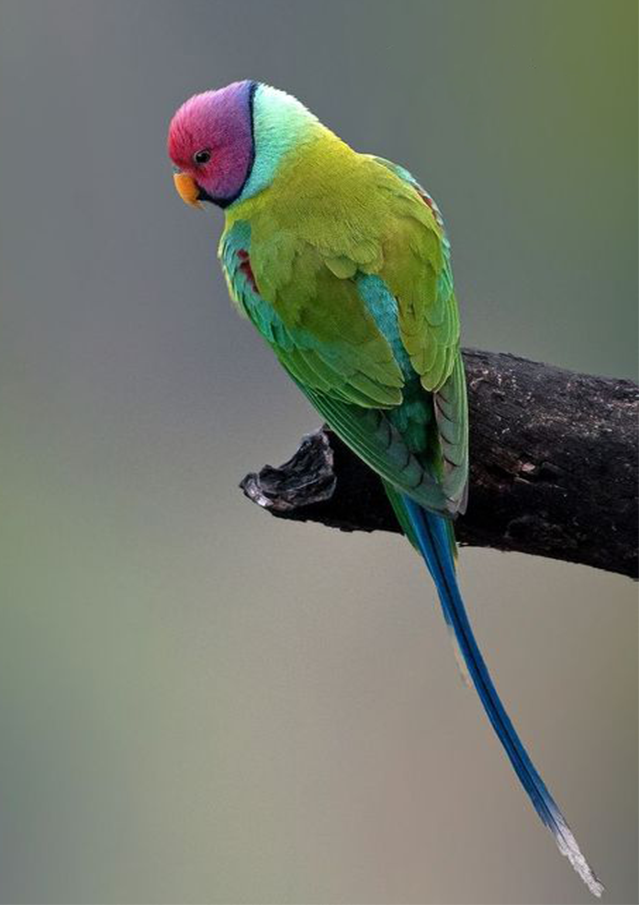
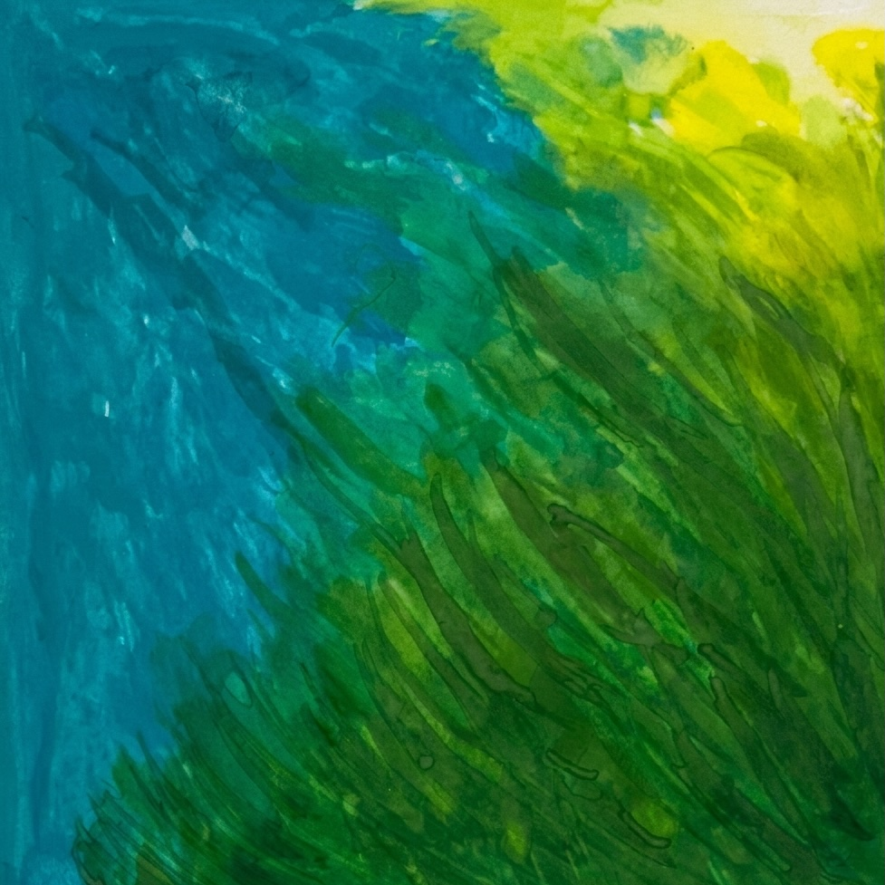
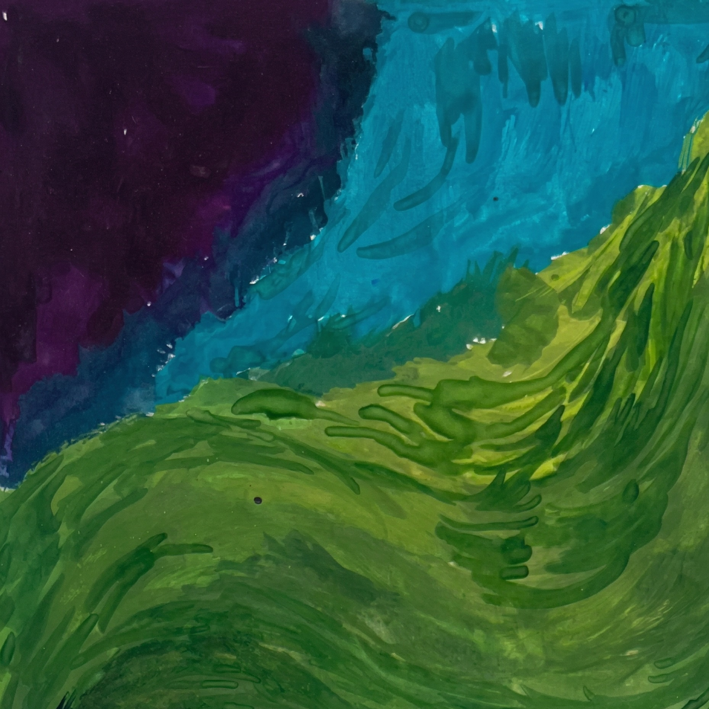
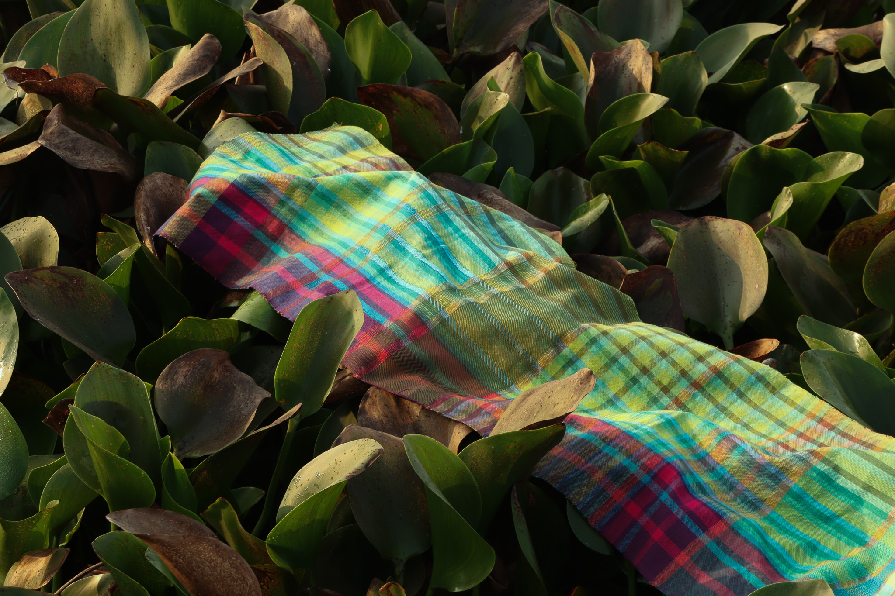
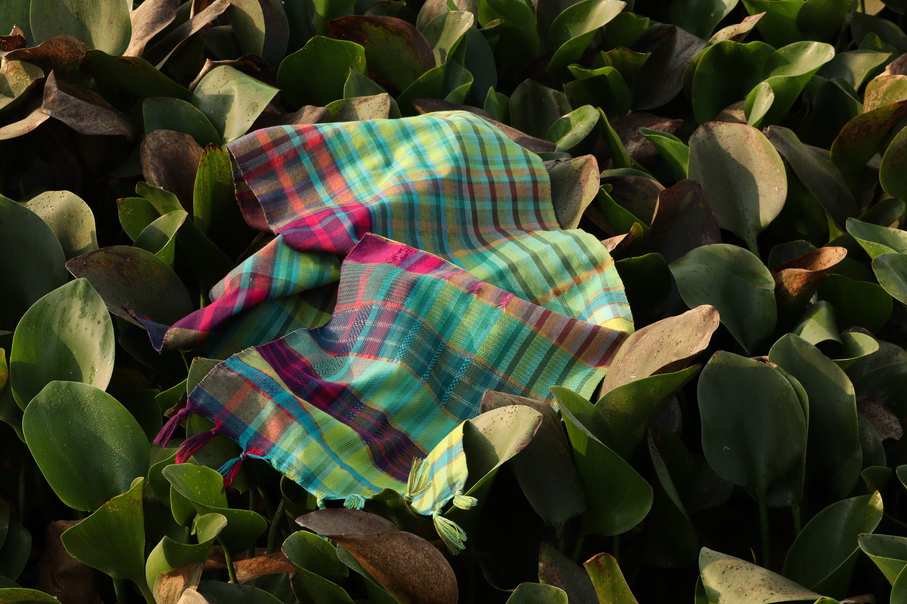
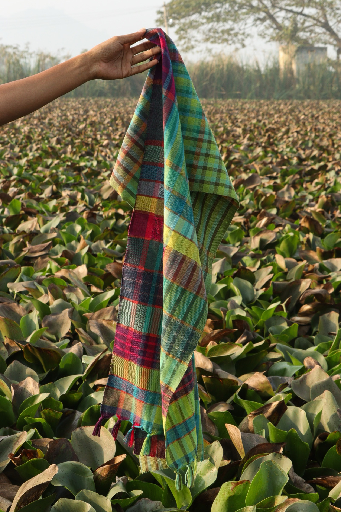
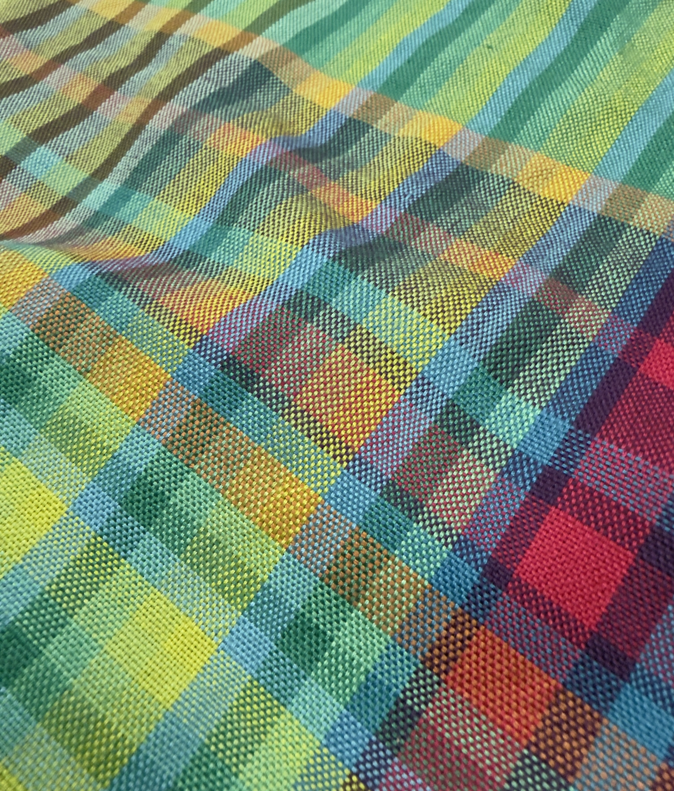
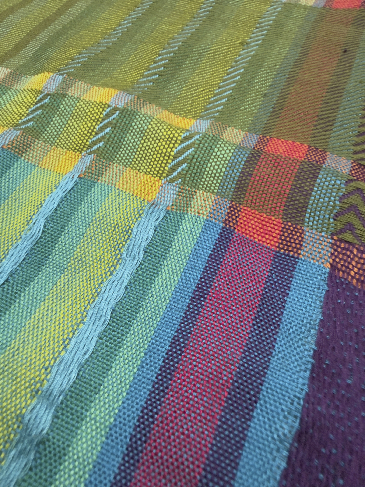
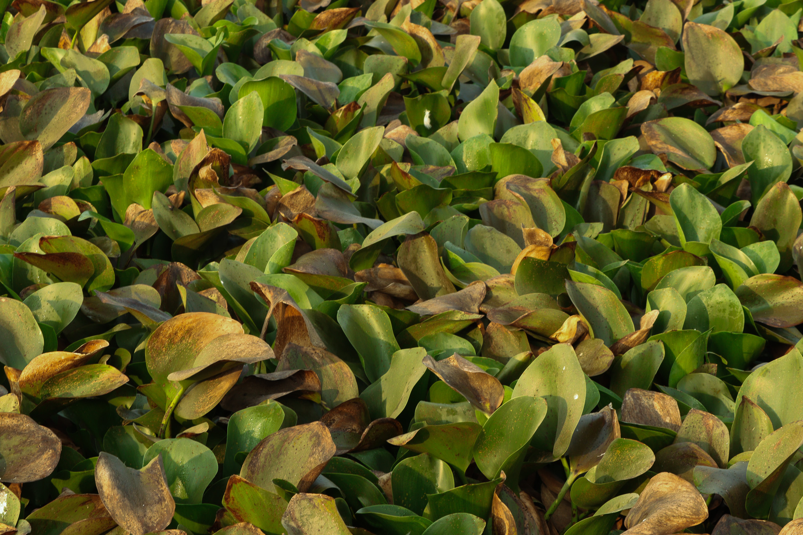

BASIC WEAVING
About the Project
This project was an introduction to the fundamentals of weaving, exploring the most basic weave structures and understanding how simple techniques can come together to create visually compelling fabric.

Inspiration — The Plum Headed Parakeet
The plum headed parakeet (Psittacula cyanocephala) is a vibrant bird endemic to the Indian subcontinent. The males are distinguished by their striking pinkish purple head contrasted against a vivid green body, while the females carry a softer grey head. Known for their swift, twisting flight and gregarious nature, these birds are as dynamic in movement as they are in colour — making them a rich and compelling source of visual inspiration.
Brief
The colour palette of the plum headed parakeet — its greens, pinks and purples — was used to derive a stripe rhythm which then became the foundation for exploring different basic weave structures, translating the essence of the bird into woven form.
Colour Palate
Stripe Rhythm







Final Piece



Technique
The project explored fundamental weave structures including plain weave, twill, satin and basket weave using polyester thread as the primary material. The stripe rhythm derived from the parakeet's colours ran through the samples giving them a cohesive and lively visual identity.
Woven Samples







Reflection
As an individual project this was a valuable exercise in understanding the building blocks of weaving. Working from a nature-inspired colour story made the technical process feel more intuitive and grounded, laying a strong foundation for the more advanced weaving work that followed.

Alma Rachel Ipe
National Institute of Design